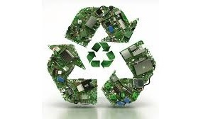
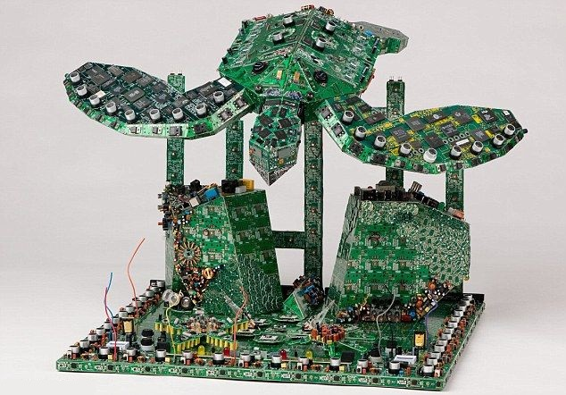
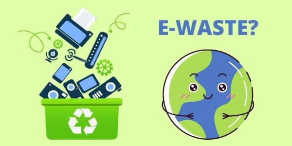

Welcome to our website
👋
E-waste (electronic waste) is one of the biggest environmental challenges of our time. With the circular economy, we can turn this problem into an opportunity for a more sustainable future.

Smart Recycling
Discover the most innovative methods to correctly recycle electronic devices and recover precious materials.

Creative Reuse
Explore ideas and projects to give new life to old electronic devices through creative reuse.

Environmental Education
Resources and guides to learn the importance of sustainable management of electronic waste.
The E-Waste Problem in Numbers
50 mil
Tons of e-waste generated worldwide every year
80%
Of e-waste ends up in landfills or is incinerated
€62 bn
Value of recoverable materials from e-waste
The Circular Economy: A Sustainable Solution
🔄
The circular economy is a way of producing and consuming that focuses on sharing, reusing, repairing, and recycling products and materials for as long as possible. This extends the life of products and reduces waste.
💎
When a product reaches the end of its life, its materials are kept in the economy and used again and again, creating new value and minimizing waste.